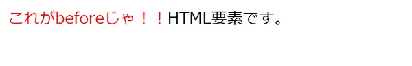
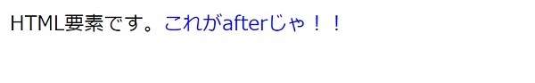

CSSの疑似要素
疑似要素とは
HTMLの要素を疑似的にCSSで作ることができます。代表的なもので::beforeと::afterが存在します。
beforeとafterの違い
::before
HTML要素の直前に追加されます。
【HTML】HTML要素です。【CSS】 .sample::before { content: 'これがbeforeじゃ！！'; color: red; }
::after
HTML要素の直後に追加されます。
【HTML】HTML要素です。【CSS】 .sample::after { content: 'これがafterじゃ！！'; color: blue; }
コロンの数
セレクタの書き方でコロンが1つの場合と2つの場合の使い方が存在します。
CSS3ではコロン1つで疑似クラス、コロン2つで疑似要素を意味します。CSS2では疑似要素もコロン1つで書かれていたらしいですが、CSS3からはコロンの数で疑似要素か疑似クラスか使い分けするようになったようです。
疑似要素の活用方法
個人的には、疑似要素を利用した作図がオススメです。
作図に関しては以下のページに備忘録を残しています。
うにてぃっぷす：CSSで作図する
参考サイト
個人的には、疑似要素を利用した作図がオススメです。
作図に関しては以下のページに備忘録を残しています。